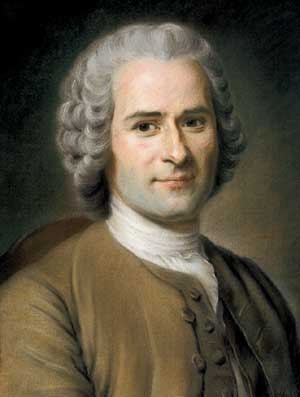

Jean-Philippe Rameau

La vida de Rameau, en general, es poco conocida, especialmente su primera mitad, los cuarenta años que
precedieron a su instalación de forma definitiva en París, hacia 1722. Era un hombre reservado, e incluso su
propia mujer no conocía muchos aspectos de esos años, de ahí la escasez de elementos biográficos de los que
se dispone. Sin embargo, lo que sí conocemos bien es su música, que se caracteriza por el oficio excepcional
de este compositor que quiere ser, ante todo, un teórico de su arte. Además, ya desde su época, se le
considera un renovador que puso en práctica procedimientos antes inexistentes, pero que se concretan en
formas caducas.
Rameau pareció revolucionario a los lullystas, derrotados por la armonía compleja que desplegaba, y
reaccionario a los filósofos, que no juzgaban sino su continente y no pudieron, o no quisieron, escucharle.
La incomprensión que sufrió por parte de sus contemporáneos le impidió reemprender algunas licencias, como
el segundo “Trio des Parques” de Hippolyte et Aricie, que tuvo que retirar después de las primeras
representaciones, ya que los cantantes no conseguían interpretarlo correctamente. Así, el más grande
armonista de su época es ignorado incluso entonces, cuando la armonía, el aspecto “vertical” de la música,
toma definitivamente ventaja sobre el contrapunto, que representa su aspecto “horizontal”.
No se pueden comparar los destinos de Rameau y de Bach, los dos gigantes de la ciencia musical del siglo
XVIII, más que como aislados de todos sus colegas, cuando todo lo demás los separa. A este respecto, el año
1722, que vio aparecer simultáneamente el Traité de l’Harmonie y el primer ciclo del Das wohltemperierte
Klavier –El clave bien temperado-, es muy simbólico. Los músicos franceses de finales del siglo XIX no se
equivocaron, en plena hegemonía musical germánica, cuando vieron en Rameau al único músico francés de fuerza
comparable a Bach, lo que permitió el redescubrimiento progresivo de su obra.
{kind=link}
Vida.
Séptimo hijo de una familia de once, Jean-Philippe Rameau -Dijon, 25 de septiembre de 1683 – París, 12 de septiembre de 1764- fue bautizado en la Iglesia de Saint-Étienne de Dijon el 25 de septiembre de 1683, el mismo día de su nacimiento. Su madre, Claudine de Martinécourt, era hija de un notario, miembro de la pequeña nobleza, y su padre, Jean Rameau, primer músico de la familia, era organista en las iglesias de Saint-Étienne y Saint-Bénigne de Dijon. Formado musicalmente por él, se dice que Jean-Philippe aprendió las notas antes incluso que a leer.Estudió en el colegio jesuita de Godrans, aunque no permaneció mucho tiempo en las aulas: inteligente y despierto, nada le interesaba aparte de la música. Sus estudios generales se atascaron y tuvo unos resultados tan desastrosos que los propios profesores solicitaron a su padre que los abandonase, por lo que padeció siempre de una deficiente expresión escrita.
A los 18 años su padre lo envió a Italia para perfeccionar su educación musical: no fue más allá de Milán y no se conoce nada de esta corta estancia, puesto que apenas tres meses después Rameau estaba de regreso en Francia.
Hasta los 40 años, su vida está hecha de mudanzas incesantes y mal conocidas: después de su regreso a Francia habría formado parte de una troupe milanesa de músicos ambulantes; luego habría residido en Montpellier; en enero de 1702, se encontraba como organista interino en la catedral de Aviñón; y desde el mes de mayo siguiente, ya estaba en Clermont-Ferrand, donde obtuvo el puesto de organista de la catedral para un periodo de seis años.
Primera llegada a París.
El contrato en Clermont-Ferrand no se finalizó, ya que Rameau estaba en París en 1706. Según toda apariencia, en esa época frecuentó a Louis Marchand, que había sido anteriormente organista de la iglesia de los jesuitas de la Rue Saint-Jacques, un puesto en el que Rameau fue su sucesor. El Livre de Pièces de Clavecin, primera obra publicada de Rameau, manifiesta la influencia que en él debió ejercer este colega de más edad.En 1709, Rameau regresó a Dijon para hacerse cargo de la sucesión de su padre en el órgano de la catedral, pero a los pocos años volvió de nuevo a Clermont-Ferrand, provisto de un nuevo contrato en la catedral, esta vez para un largo período, veintinueve años. Sin embargo, siguiendo la costumbre, permaneció allí solamente ocho años, en los que probablemente compuso algunos motetes y sus primeras cantatas, y maduró las ideas que darían lugar a la publicación en 1722 de su Traité de l’harmonie réduite à ses principes naturels. Este tratado, en el que de hecho llevaba reflexionando desde su juventud, situó a Rameau como un músico erudito. Suscitó numerosos ecos en los medios científicos y musicales franceses, e incluso más allá de sus fronteras.
En 1722 o principios de 1723, Rameau volvió de nuevo a París, en condiciones no muy claras. En 1724 publicó su segundo libro de piezas para el clavecín, Pièces de clavecin avec une méthode pour la mécanique des doigts. Su actividad musical se dirigió hacia las representaciones teatrales de La Foire, festejos que se celebraban al aire libre en las ferias de Saint-Germain y Saint-Laurent.
También compuso piezas para la Comédie Italienne, en especial una pieza que se hizo célebre, Les Sauvages, escrita con ocasión de la exhibición de auténticos “salvajes”, indios de América del Norte. Esta pieza compuesta para clavecín, y publicada en 1728 en su tercer libro de clavecín, Nouvelles Suites de Pièces de Clavecin, es una danza rítmica que será pronto retomada en el último acto de Les indes galantes, situando la acción en un bosque de Luisana.
El 25 de febrero de 1726, en la Iglesia de Saint-Germain l’Auxerrois, Rameau se casó a los 42 años con Marie-Louise Mangot, una joven de 19 años. Marie-Louise era buena músico y además, cantante, y participó en la interpretación de algunas de las obras de su marido.
Durante esos primeros años parisinos, Rameau prosiguió sus investigaciones y sus actividades de editor con la publicación de Nouveau système de música théorique (1726), una obra que completaba el tratado de 1722. En ese mismo periodo compuso su última cantata, Le Berger fidèle (1727), y publicó su tercer y último libro de clavecín, Nouvelles Suites de Pièces de Clavecin (1728).
Jean-Philippe soñaba con hacerse un nombre en el teatro lírico y buscaba un libretista adecuado que quisiera colaborar con él. Tenía 44 años y una gran reputación como teórico erudito, aunque no había escrito aún ninguna composición musical de envergadura.
Los años al servicio de La Pouplinière.
Fue por mediación de Piron que Rameau entró en contacto con el fermier général Alexandre Le Riche de la Pouplinière (1693-1762), uno de los hombres más ricos de Francia y artista amateur que mantuvo alrededor suyo un cenáculo de artistas del que Rameau formará parte pronto. Su encuentro determinó la vida de Rameau en los siguientes veinte años y le permitió entrar en contacto con un círculo artístico muy selecto, donde conocería a varios de sus futuros libretistas, incluidos vVoltaire y su futura bête-noire, Jean-Jaques Rousseau. Se supone que Rameau dirigió desde 1731 la orquesta privada financiada por La Pouplinière, una orquesta formada por músicos de mucha calidad. Conservó este puesto durante veintidós años.En 1733, Rameau tiene ya 50 años. Teórico célebre por sus tratados de armonía, era también un músico de talento apreciable como intérprete, tanto al órgano, como al clavecín y al violín y también al frente de la orquesta. Sin embargo, su obra como compositor se limitaba a varios motetes y cantatas y a tres libros con selecciones de piezas de clavecín, de los que solo los dos últimos destacaban por su aspecto innovador.
El éxito: Hippolyte et Aricie.
 El abad Simon-Joseph Pellegrin, religioso suspendido a divinis por el arzobispo de París por estar muy
investido en el mundo del teatro, ya llevaba escribiendo libretos de ópera o de ópera-ballet desde 1714.
Frecuentaba la casa de La Pouplinière y en ella conoció a Rameau y le proporcionó el libreto de una tragédie
en musique, Hippolyte et Aricie, que situará de golpe al compositor en el firmamento de la escena lírica
francesa.
El abad Simon-Joseph Pellegrin, religioso suspendido a divinis por el arzobispo de París por estar muy
investido en el mundo del teatro, ya llevaba escribiendo libretos de ópera o de ópera-ballet desde 1714.
Frecuentaba la casa de La Pouplinière y en ella conoció a Rameau y le proporcionó el libreto de una tragédie
en musique, Hippolyte et Aricie, que situará de golpe al compositor en el firmamento de la escena lírica
francesa.
La pieza se montó en privado en casa de La Pouplinière en la primavera de 1733. A partir de julio se celebraron los ensayos en la Académie Royale de Musique y la primera representación tuvo lugar el 1 de octubre. La obra desconcertó a todos al principio, pero finalmente fue un triunfo. Siguiendo la tradición de Lully en cuanto a estructura, un prólogo y cinco actos, superaba musicalmente a todo cuanto se había hecho antes en ese campo.
La obra no dejó a nadie indiferente. Con 32 representaciones en 1733, Hippolyte et Aricie consagró definitivamente a Rameau y lo situó en el primer plano de la música francesa. La pieza será repuesta en vida del compositor tres veces más en la Académie Royale de Musique y, ya al año siguiente, en 1734, fue montada en su ciudad natal, Dijon.
Durante los siete años que van de 1733 a 1739, Rameau dio la medida de su genio y pareció querer recobrar el tiempo perdido componiendo sus obras más emblemáticas: tres tragedias líricas, tras Hippolyte et Aricie, Castor et Pollux, en 1737, y después Dardanus, en 1739, y dos óperas-ballets, Les Indes galantes en 1735, y Les Fêtes d’Hébé, en 1739. Esto no le impidió continuar con sus trabajos teóricos: en 1737 publicó su tratado sobre la Génération harmonique, en el que retomó y desarrolló los tratados precedentes. La exposición, destinada a los miembros de la Adacémie des Sciences, comenzaba con el enunciado de doce proposiciones y la descripción de siete experimentos con los que Rameau entendía demostrado que su teoría estaba fundada en derecho, ya que provenía directamente de la naturaleza, un tema muy querido de los intelectuales del Siglo de las Luces.
Siete años de silencio.
Tras algunos años en que compuso una obra maestra tras otra, Rameau desapareció misteriosamente durante seis años de la escena lírica, y casi de la escena musical, puesto que no estrenó nada salvo en 1744 esa nueva versión de Dardanus.No se sabe la razón de este repentino silencio, aunque pudiera deberse a un desacuerdo con las autoridades de la Académie Royale de Musique. Rameau se consagró probablemente a su puesto de director de orquesta de La Pouplinière, pues en esa época, sin duda, había dejado ya todos sus puestos como organista -el último, en 1738, el de la iglesia de la Sainte-Croix de la Bretonnerie-. No escribió tampoco ningún escrito teórico más y parece que solo compuso en esos años las Pièces de clavecin en concert, nacidas probablemente de conciertos organizados en casa del fermier-général y que es la única incursión de Rameau en el campo de la música de cámara.
Segunda carrera lírica.
Rameau reapareció en la escena lírica en 1745 y ese mismo año, con más de 60 años, iba a monopolizar casi la temporada con el estreno de cinco nuevas obras que hablan de su vitalidad: La Pincesse de Navarre, comedia-ballet con libreto de Voltaire, representada en Versalles con ocasión de la boda de Luis, Delfín de Francia; Platée, comedia lírica de un estilo inédito, estrenada en Versalles, que en el registro cómico fue la obra maestra de Rameau; Les Fêtes de Polymnie, ópera-ballet; Le Temple de la Gloire, ópera-ballet, con libreto de nuevo de Voltaire, representada en Versalles para festejar la victoria de Fontenoy, que será casi rehecha al año siguiente; y por último, Les Fêtes de Ramire, acto de ballet representado en Versalles. Rameau se convirtió en el músico oficial de la Corte: fue nombrado Compositeur de la Musique du Cabinet du Roi en el mes de mayo, y recibirá en adelante una pensión anual de 2000 libras.Tras 1745, el ritmo de producción del compositor va a ralentizarse, aunque Rameau seguirá componiendo para la escena de manera más o menos regular, hasta el fin de su vida, sin abandonar sus investigaciones teóricas ni, tampoco, sus actividades polémicas y panfletarias. Así, compuso en 1747 Les Fêtes de l’Hymen et de l’Amour y su última obra para el clavecín, una pieza aislada titulada La Dauphine; en 1748, la pastoral Zaïs, el acto de ballet Pygmalion y la ópera-ballet Les Surprises de l’Amour; en 1749, la pastoral Naïs y la tragedia lírica Zoroastre, pieza innovadora en que suprime el prólogo, remplazado por una simple obertura; en 1751, por último, compuso el acto de ballet La Guirlande y la pastoral Acanthe et Céphise.
Últimos años.
En 1753 La Pouplinière tomó como amante a una músico intrigante, Jeanne-Thérèse Goermans, hija del conocido fabricante de clavecines Jacques, que se hace llamar Madame de Saint-Aubin. Ella hizo el vacío alrededor de Rameau e incluso consiguió que La Pouplinière contratase a Stamitz: fue la ruptura con Rameau que, por cierto, no necesitará más del sustento financiero de su antiguo amigo y protector.Rameau prosiguió sus actividades de teórico y de compositor hasta su muerte. Vivió con su mujer y dos de sus hijos en un gran apartamento de la Rue des Bons-Enfants, de donde salía cada día, perdido en sus pensamientos, a dar su paseo en solitario por los cercanos jardines del Palais-Royal o de las Tullerías.
Sus piezas continuaron siendo representadas, a veces por deferencia hacia el viejo compositor, que en 1757 cierra un contrato de exclusividad con la Académie Royale de Musique que le asegura una pensión anual de 1.500 libras. En 1756 se programa una segunda versión de Zoroastre. En 1757, se representa Anacréon, una nueva entrée añadida a Les Surprises de l’Amour. En 1759 se repone con gran éxito, Dardanus y, en 1760, se estrena Les Paladins, comedia-ballet en un estilo renovado que sirvió, sin embargo, para seguir ajustando cuentas, por escrito, con la Encyclopédie y los filósofos. En 1761 Rameau es nombrado miembro de la Académie de Dijon.
Sus últimos escritos, en especial L’Origine des sciences, estuvieron marcados por su obsesión de hacer de la armonía la referencia de toda ciencia, lo que propició la opinión de Grimm que habló de la chochez del “vieux bonhomme”. Pero Rameau aún conservaba toda su lucidez y compuso, con más de 80 años, su última tragedia en música, Les Boréades, una obra de gran novedad pero que no va en la dirección que toma entonces la música. En la primavera de 1764 Rameau fue nombrado Chevalier de l’Ordre de Saint-Michel y comenzó los ensayos de Boréades, pero la obra, por razones desconocidas, no será representada. Rameau falleció de una fiebre pútrida el 12 de septiembre de 1764 y Les Boréades debieron esperar más de dos siglos su estreno triunfal en Aix-en-Provence en 1982.
Al día siguiente, 13 de septiembre, se enterró al gran músico en la Iglesia de san Eustaquio de París. Varias ceremonias de homenaje tuvieron lugar en los días siguientes en París, Orléans, Marsella, Dijon y Ruan. Los elogios fúnebres, escritos por Chabanon y Maret, fueron publicados por el Mercure de France. Su música de escena, como la de Lully, continuó siendo programada hasta el final del Antiguo Régimen, y después desapareció del repertorio durante más de un siglo. Lo mismo ocurrió con su obra para tecla, recuperada por los impresionistas, que quedaron maravillados ante la magnificencia de las armonías de este padre de la música.